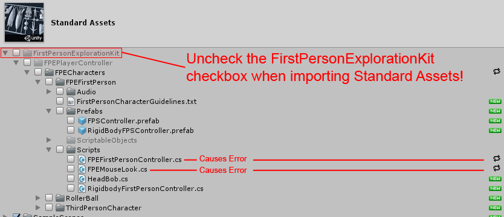

The following is a collection of error messages or other hiccups some people commonly come across while using First Person Exploration Kit.
Table of ContentsThis error is most likely the result of the import of a conflicting asset package, probably the Standard Assets package. To fix, simply re-import First Person Exploration Kit or start a new Unity project and only import First Person Exploration Kit, and the issue should resolve itself. The reason this happens is that sometimes Unity thinks the First Person FPS Controller that comes with Standard Assets is the same as the FPEKit namespace FPEFirstPersonController and overwrites it without clear warning.
If you want to import the Standard Assets package (or another package that caused the import conflict), you can still do so. Just be sure to un-check the "FirstPersonExplorationKit" checkbox when importing Standard Assets, and the rest of Standard Assets will import as expected and First Person Exploration Kit will continue to work as it did before.
This issue occurs as a result of not having a "Main Menu" in your build. The 0th scene index is specially reserved for the Main Menu. If you have a regular scene at build index 0, interactions won't work the same as a gameplay scene.
To fix this, see the section on Making Your First Build for details on how to add a "Main Menu" scene to your build.
If your scenes included a "DebugSceneIndexChecker", you may see an error message similar to this in your build's outputlog.txt:
FPEBuildIndexTester:: This scene must be in Build Settings scene list at index '1' in order to function correctly. But, it is not (buildIndex is '0', not the required index of '1')